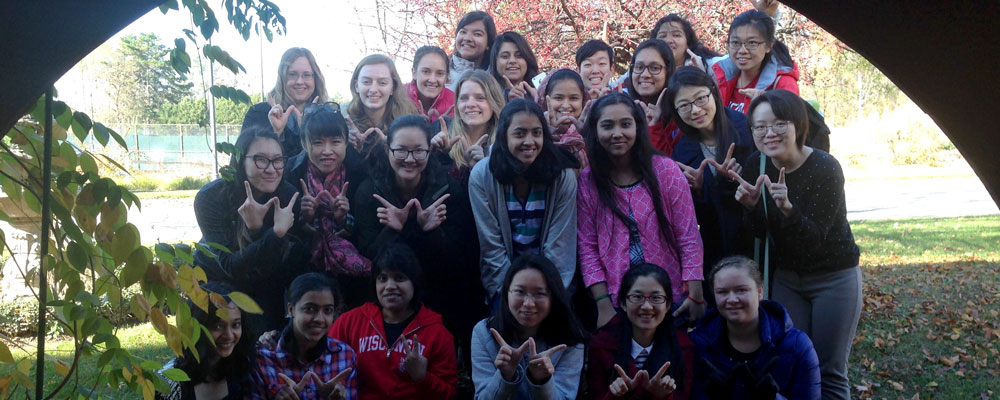
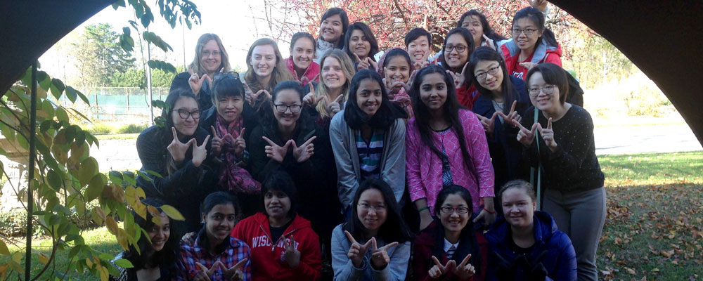
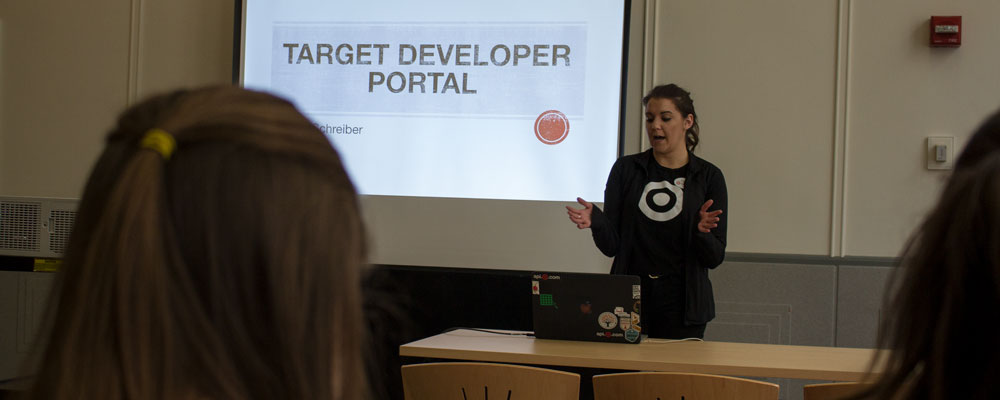
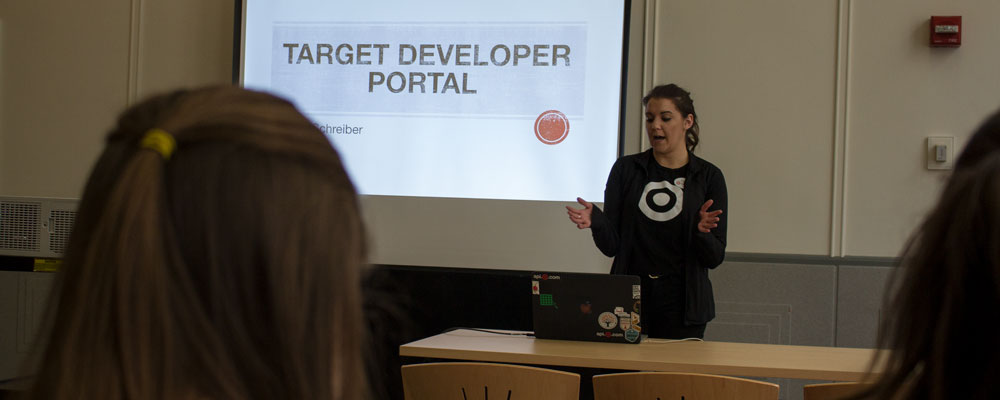

Students!
The best way to get involved in WACM is to attend our Events. We typically host a variety of events throughout the year, including visits to tech offices such as Epic and Google, attending the Grace Hopper Celebration of Women in Computing, meals with distinguished women in the tech field, informational sessions on Linux, club brunches, social lunches, and mentoring events.


 

 

Mailing List
Join our (low volume) mailing list for announcements of upcoming events and so forth. You can subscribe to the list by going to the Subscription Page. Please subscribe with your wisc.edu or cs.wisc.edu email address.
Slack
Get in touch with other WACM members on Slack! If you're unfamiliar with it, Slack is a messaging tool for organizations. If you have questions about searching for jobs or internships, attending the Grace Hopper Conference, or computer science/school in general this is the place to ask. Sign up at Slack with your wisc.edu or cs.wisc.edu email.
Sponsors!
We’d love to work with you on our next event! To get in touch with us about sponsoring, please email President, Vice President. Here’s how you can support WACM:
- Host a tour of your company
- Hold a lunch or dinner with a tech talk or informal networking session
- Donate towards our next social event (advertising will include your company name and/or logo)
- Sponsor a speaker for our Speaker Series(travel expenses, food for the event, etc)
- Suggest something! We’re open to new ideas